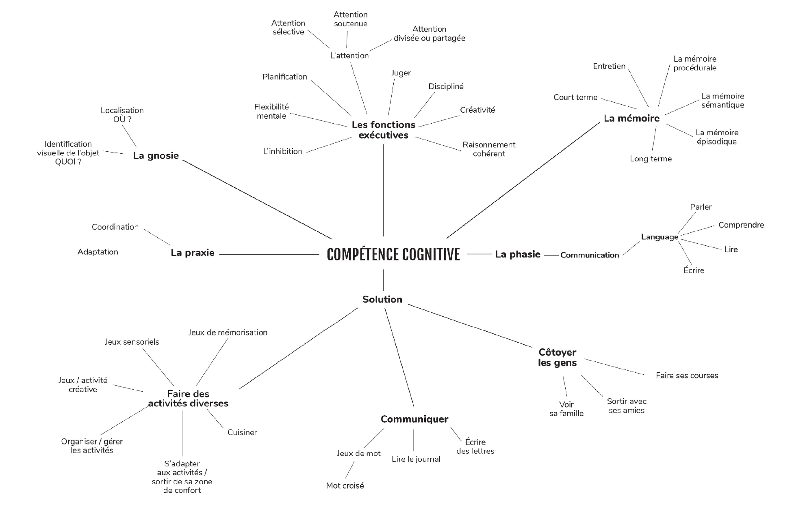
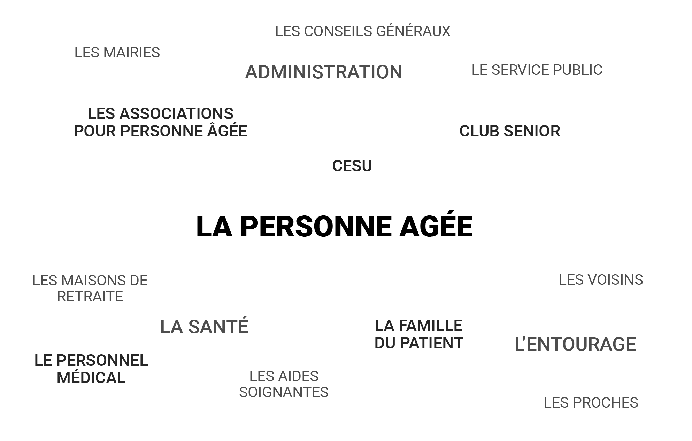
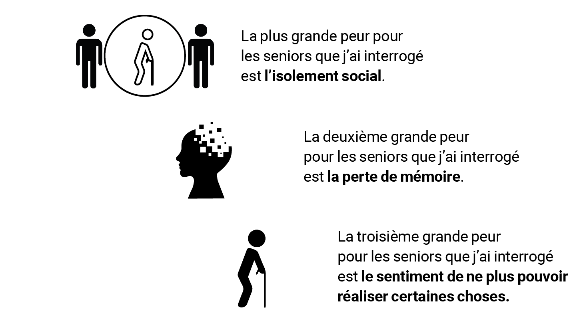
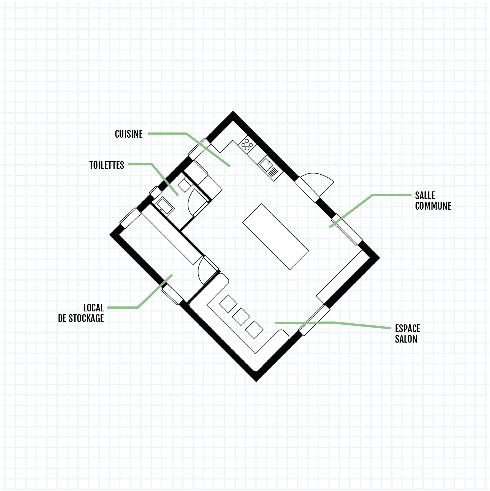
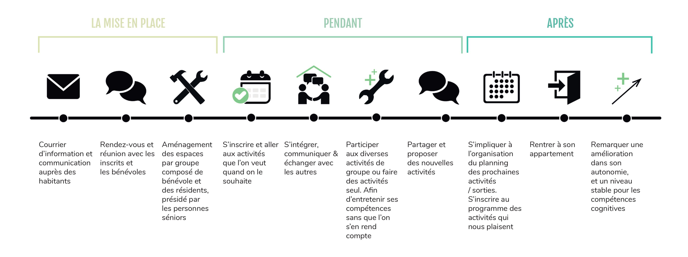

Design de Service :
Communauté des jeunes agés
Activité : UX design • Recherche • Card sorting • User Interview • Conception d’espace • User Journey • Empathy Map
Contexte : Scolaire. Projet effectué seul dans le cadre d’un partiel de fin d’année avec le choix d’une problématique libre à condition qu’il s’agisse d’un service. Durée : 1 semaine.
Problématique : Comment rendre accessible l’entretien des compétences cognitives d’une personne senior, afin de prolonger leur autonomie, leur santé mentale et leur compétence ?
Pour ma proposition, je me base sur un témoignage concret. La grand-mère de ma meilleure amie d’enfance ne peut plus aller à des ateliers qui stimulent et entretiennent les fonctions cognitives de son cerveau. Elle les appelle les cours de mémoire. Ces cours lui permettent de rester autonome et de rythmer la semaine.Les personnes âgées ou d’un certain âge n’ont pas forcément beaucoup de problème de santé de nos jours, grâce aux progrès de la médecine.Pourtant, ils font face à un fléau qui est l’ignorance, la perte de mémoire et la solitude pour la plupart. De nombreux moyens existent pour prévenir ces problèmes individuellement mais il y a toujours un facteur qui ne fonctionne pas sur cette tranche d’âge.Dans le cas, de la grand-mère de mon amie, il n’y a plus de volontaire pour donner les “cours de mémoire” tous les mardis après-midi. La bénévole qui s’en occupait est désormais trop âgée et épuisée. Pour d’autres, des facteurs de déplacement les isole de ces activités, ou encore il n’y en a pas de proposées dans leur village, ou leur ville.Mon champ d’action est pour les personnes qui veulent entretenir leur compétence cognitive.
Mind map du champ

Stakeholders

Retour des sondages
Lors de mes questionnaires quantitatifs, sur la place du déclin collectif dans la vie d’aujourd’hui je me suis rendue compte que :
80% des gens ne pensent pas être atteints de déclins cognitifs, et le reste est partagé égalitairement entre le fait qu’ils ne savent pas et le fait d’avoir remarqué des déclins cognitifs. Sur ce questionnaire 35% des personnes qui ont répondu avais moins de 40 ans, et le reste avait entre 51 et 60 ans. En tout 70% sont des personnes qui travaillent. Lors de mes questionnaires qualitatifs, sur leur plus grande peur je me suis rendue compte que :
Persona
Recherche complémentaire sur les compétences cognitive
La cognition est le terme scientifique qui sert à désigner l’ensemble des processus mentaux qui se rapportent à la fonction de connaissance et mettent en jeu la mémoire, le langage, le raisonnement, l’apprentissage, l’intelligence, la résolution de problème, la prise de décision, la perception ou l’attention. La mémoire, La phasie (ou le langage), La praxie (ou la capacité à pratiquer des choses), La gnosie : Recouvre ce que je reconnais, ce que je vois, ce sur quoi je mets du sens... Les capacités de reconnaissance et d’identification sensorielle (visuelle, auditive, tactile, gustative, olfactive), le repérage dans l’espace de notre corps (où je suis, où sont les parties de mon corps), Les fonctions exécutives recouvrent plusieurs compétences : • Organiser • Planifier • Juger • Faire preuve d’abstraction • Être flexible • Savoir inhiber ses émotions • Être auto discipliné • Tenir un raisonnement cohérent • Faire preuve de créativité cognitive au quotidien.
Insight
Par rapport à toutes mes explorations du sujet et de nombreux échanges, j’en ressors que la plupart des personnes ne souhaitent pas accéder au club de personne âgée par peur d’être isolé au sein du groupe et de ne pas apprécier cette nouvelle ambiance. La plupart des personnes, n’entretiennent plus leur compétence cognitive ni leurs relations avec les autres. Et s’enferment dans une boucle sans fin, jusqu’à ne plus avoir d’autonomie. Beaucoup de personnes ne se rendent pas compte de leur perte de compétence cognitive au quotidien.
Hypothèses
Peut-on rapprocher les personnes qui souhaitent rester autonome ?Dans un lieu commun proche de leur habitat.Peut-on créer un service autonome et auto-alimenté pour permettre l’entretien des connaissances cognitives ? Grâce à une communauté.Les activités du quotidien en groupe permettent de travailler ces compétences ?En ciblant des activités larges et diverses.
Implémentation de la proposition
Je souhaite résoudre ce problème d’accessibilité grâce à un nouveau service. Dans un lieu d’accueil au sein des quartiers ou lieu de résidence pour personne senior. Je pensais dans un premier temps le développer avec l’aide des copropriétés, un espace dans lequel il y a tout le nécessaire pour permettre aux résidents des alentours de s’approprier l’espace. Le lieu est géré par des bénévoles qui font partie des résidents, il correspond aux résidents qui viennent de partir à la retraite. Diverses activités peuvent être mise en place, comme : • Préparation des repas collectifs • Activité créative • Sortie piscine • Promenade • Loto • Bingo • Jeu société • Gymnastique • Soirée film • Sortie Musée • Sortie shopping • Pétanque
Exemple de répartition des espaces
Vie du projet : Global
Conclusion
J’ai affiné ma proposition à partir des retours et des remarques de la personne qui m’a inspiré pour cette problématique ainsi que sa famille. Les avantages sont certains, un environnement de confiance proche de l’habitat, avec un grand pas vers ses voisins que l’on ne côtoie pas assez et que l’on connaît si peu et pourtant si proche de nous. Les trois points importants sont : • d’entretenir les compétences en restant actif au sein d’une communauté. • d’empêcher la solitude chez les personnes âgées. • de rassurer la famille et enlever la culpabilité